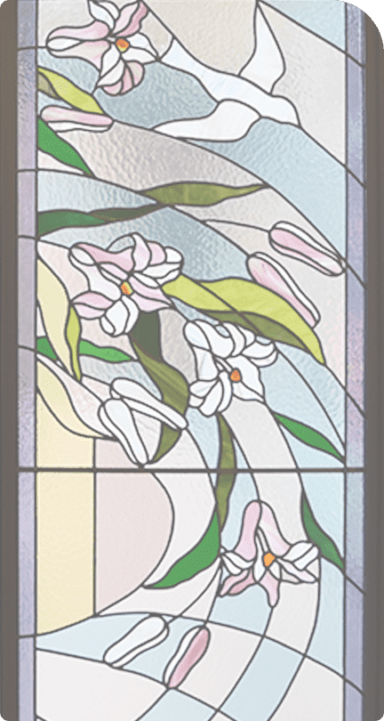
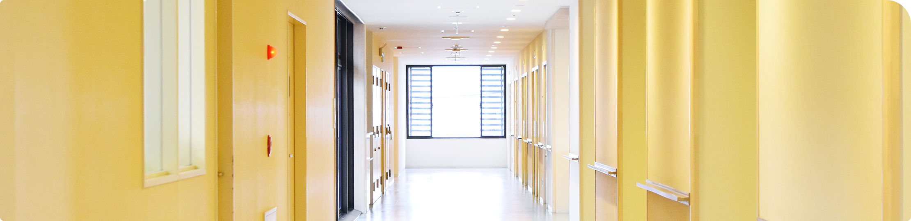

病院概要
病院概要
～ 病院理念 ～
私達は、患者様一人一人のために、
信頼される、最良の、心温まる医療サービスを提供します
基本方針
- 一、医療に関わる者として、最高の職能が発揮できる様、常に自己研鑽に努めます
- 一、患者様の人権を尊重し、高い医療倫理に基づき行動します
- 一、徹底された医療安全の中で、安心できる療養環境を提供します
- 一、地域の関係機関と連携し、積極的な社会復帰支援を行います
- 一、信頼される病院としての社会的責任を全うします
行動方針
- 一、相手の身になって聴こう
- 一、相手の身になって語ろう
- 一、相手の身になって行動しよう


- 病院名
- 社会医療法人 聖ルチア会 聖ルチア病院
- 代表者
- 理事長 院長／大治 太郎
- 所在地
- 福岡県久留米市津福本町1012
- 電話番号
- 0942-33-1581
- FAX番号
- 0942-33-1586
- ホームページ
- http://st-lucia.or.jp
- メール
- メールフォームより受付ます
- 看護体制
- １５：１（患者様15人に看護師1人配置)
- １０：１（患者様10人に看護助手1人配置）
- 病床数
- 263床
-
- ・1病棟 ～精神科急性期治療病棟(54床)～
- ・2病棟 ～精神療養病棟(52床)～
- ・3病棟 ～認知症治療病棟(50床)～
- ・5病棟 ～精神一般病棟(53床)～
- ・6病棟 ～精神一般病棟(54床)～
- 職員数
- 総数 226名 医師
- 常勤医師 12名（内：精神保健指定医 10名）
- 非常勤医師 16名（内：精神保健指定医 3名）
- 薬剤師 3名
- 看護職員 110名
- ナースエイド 35名
- 作業療法士 12名
- 精神保健福祉士・ソーシャルワーカー 12名
- 臨床心理士 4名
- 管理栄養士 2名
- 栄養士 4名
- 調理員 10名

〒830-0047 福岡県久留米市津福本町1012
 0942-33-1581 (代表)
0942-33-1581 (代表)
FAX 0942-33-1586
| 月 | 火 | 水 | 木 | 金 | 土 | 日・祝 | |
|---|---|---|---|---|---|---|---|
| 9:00〜12:30 | ○ | ○ | ○ | ○ | ○ | ○ | × |
| 14:00〜17:00 | ○ | ○ | ○ | × | ○ | × | × |
| 9:00〜12:30 | 14:00〜17:00 | |
|---|---|---|
| 月 | ○ | ○ |
| 火 | ○ | ○ |
| 水 | ○ | ○ |
| 木 | ○ | × |
| 金 | ○ | ○ |
| 土 | ○ | × |
| 日・祝 | × | × |